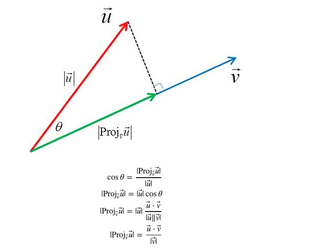
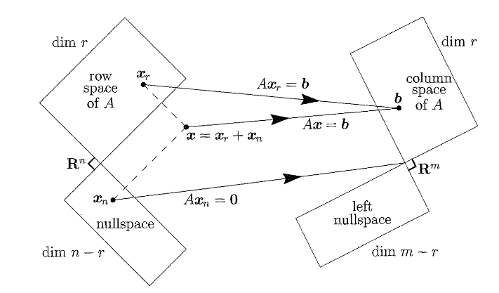
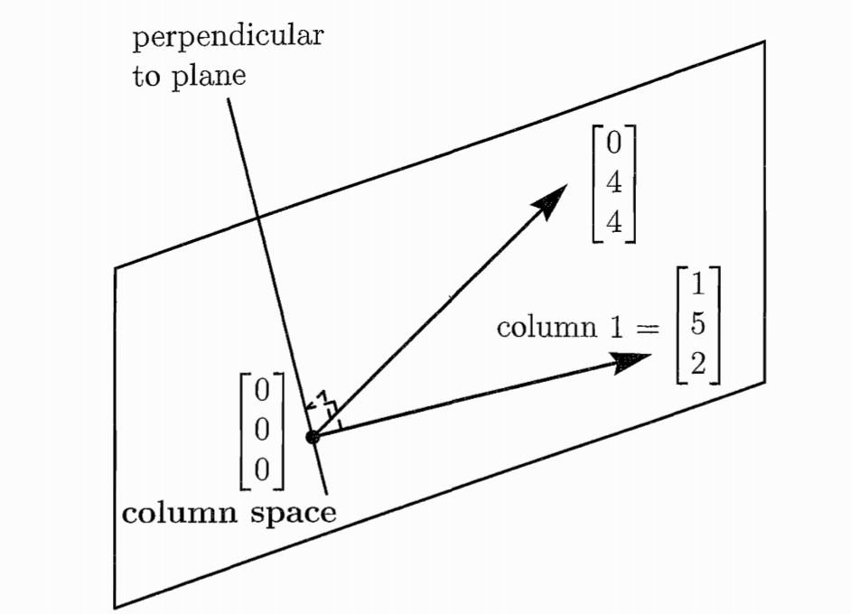
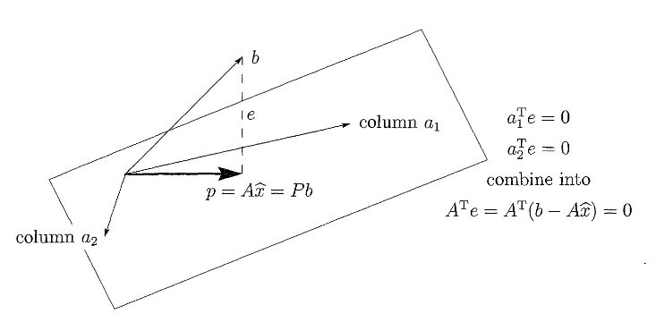
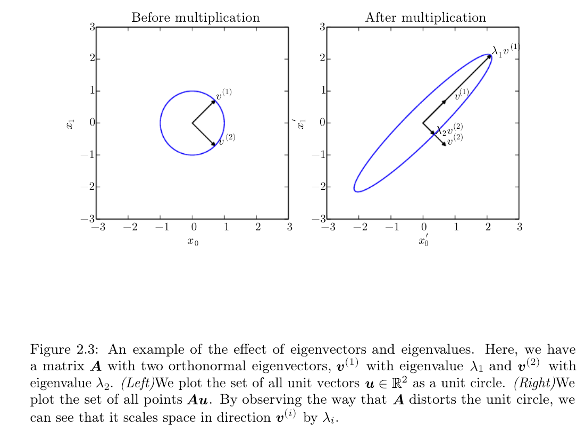

Linear Algebra for Machine Learning
Contents
Linear Algebra for Machine Learning#
Let me introduce you MIT prof G Strang - probably the best educator in America. He has published this playlist of youtube videos on Linear Algebra.
Also, watch these videos for a more elementary treatment of the topic.
Linear Algebra recitation for my classes. Recitation was delivered by my TA Shweta Selvaraj Achary.
The corresponding chapter of Ian Goodfellow’s Deep Learning book is what you partially need to know as data scientists at a graduate level but arguably if you are just starting you ought to know 2.1-2.5.
Key Points#
We can now summarize the points to pay attention to, for ML applications. In the following we assume a data matrix \(A\) with \(m\) rows and \(n\) columns. We also assume that the matrix is such that it has \(r\) independent rows or columns, called the matrix rank.
Projections#
Its important to understand this basic operator and its geometric interpretation as it is met in problems like Ordinary Least Squares but also all over ML and other fields such as compressed sensing. In the following we assume that the reader is familiar with the concept of vector spaces and subspaces.
Let \(S\) be a vector subspace of \(R^n\). For example in \(R^3\), \(S\) are the lines and planes going through the origin. The projection operator onto \(S\) implements a linear transformation: \(\Pi_S: R^3 →S\). We will stick to \(R^3\) to maintain the ability to plot the operations involved. We also define the orthogonal subspace,
The transformation \(\Pi_S\) projects onto space \(S\) in the sense that when you apply this operator, every vector \(\mathbf u\) in any other space results in the subspace \(S\). In our example above,
This means that any components of the vector \(\mathbf u\) that belonged to \(S^\perp\) are gone when applying the projection operator. Effectively, the original space is decomposed into
Now we can treat projections onto specific subspaces such as lines and planes passing through the origin.
For a line defined by a direction vector \(\mathbf u\)
we can define the projection onto the line
 Projection of \(\mathbf u\) onto the line \(l\)
The space \(S^\perp ≡ l^\perp\) is a plane since it consists of all the vectors that are perpendicular to the line. What is shown in the figure as a dashed line is simply the projection of \(\mathbf u\) on the \(l^\perp\) subspace,
The orthogonal space of a line with direction vector \(\mathbf v\) is a plane with a normal vector \(\mathbf v\). So when we project the \(\mathbf v\) on the line we get two components one is lying on the line and is the \(\Pi_l \mathbf u\) and the other is the vector \(\mathbf w\) = \(\Pi_{l^\perp} \mathbf u = \mathbf u - \mathbf v = \mathbf u - \Pi_{\mathbf v} \mathbf u \). The vector \(\mathbf w\) is what remains when we remove the projected on \(\mathbf v\) part from the \(\mathbf u\).
The Four Fundamental Subspaces#

The fundamental theorem of Linear Algebra specifies the effect of the multiplication operation of the matrix and a vector (\(A\mathbf{x}\)). The matrix gives raise to 4 subspaces:
The column space of \(A\), denoted by \(\mathcal{R}(A)\), with dimension \(r\).
The nullspace of \(A\), denoted by \(\mathcal{N}(A)\), with dimension \(n-r\).
The row space of \(A\) which is the column space of \(A^T\), with dimension \(r\)
The left nullspace of \(A\), which is the nullspace of \(A^T\), denoted by \(\mathcal{N}(A^T)\), with dimension \(m-r\).
The real action that the matrix performs is to transform its row space to its column space.
The type of matrices that are common in ML are those that the number of rows \(m\) representing observations is much larger than the number of columns \(n\) that represent features. We will call these matrices “tall” for obvious reasons. Let us consider one trivial but instructive example of the smallest possible “tall” matrix:
In ML we are usually concerned with the problem of learning the weights \(x_1, x_2\) that will combine the features and result into the given target variables \(\mathbf{b}\). The notation here is different and we have adopted the notation of many linear algebra textbooks.
To make more explicit the combination of features we can write,
Since \(m=3 > n=2\), we have more equations than unknowns we in general we have no solutions - a system with \(m > n\) will be solvable only for certain right hand sides \(\mathbf{b}\). Those are all the vectors \(\mathbf{b}\) that lie in the column space of \(A\).

In this example, as shown in the picture \(\mathbf{b}\) must lie in the plane spanned by the two columns of \(A\). The plane is a subspace of \(\mathbb{R}^m=\mathbb{R}^3\) in this case.
Now instead of looking at what properties \(\mathbf{b}\) must have for the system to have a solution, lets look at the dual problem i.e. what weights \(\mathbf{x}\) can attain those \(\mathbf{b}\). The right-hand side \(\mathbf{b}=0\) always allows the solution \(\mathbf{x}=0\) The solutions to \(A \mathbf{x} = \mathbf{0}\) form a vector space - the nullspace \(\mathcal{N}(A)\). The nullspace is also called the kernel of matrix \(A\) and the its dimension \(n-r\) is called the nullity.
\(\mathcal{N}(A)\) is a subspace of \(\mathbb{R}^n=\mathbb{R}^2\) in this case. For our specific example,
the only solution that can satisfy this set of homogenous equations is: \(\mathbf{x}=\mathbf{0}\) and this means that the null space contains only the zero vector and this
Two vectors are independent when their linear combination cannot be zero, unless both \(x_1\) and \(x_2\) are zero. The columns of \(A\) are therefore linearly independent and they span the column space. They have therefore all the properties needed for them to constitute a set called the basis for that space and we have two basis vectors (the rank is \(r=2\) in this case). The dimension of the column space is in fact the same as the dimension of the row space (\(r\)) and the mapping from row space to column space is in fact invertible. Every vector \(\mathbf{b}\) comes from one and only one vector \(\mathbf{x}\) of the row space (\(\mathbf{x}_r\)). And this vector can be found by the inverse operation - noting that only the inverse \(A^{-1}\) is the operation that moves the vector correctly from the column space to the row space. The inverse exists only if \(r=m=n\) - this is important as in most ML problems we are dealing with “tall” matrices with the number of equations much larger than the number of unknowns which makes the system inconsistent (or degenerate).
 Projection onto the column space
Geometrically you can think about the basis vectors as the axes of the space. However, if the axes are not orthogonal, calculations will tend to be complicated not to mention that we usually attribute to each vector of the basis to have length one (1.0).
Eigenvalues and Eigenvectors#
The following video gives an intuitive explanation of eigenvalues and eigenvectors and its included here due to its visualizations that it offers. The video must be viewed in conjunction with Strang’s introduction
During the lecture we will go through an example from how your brain processes the sensory input generated by the voice of the lecturer(unless you are already asleep by that time) to combine optimally the sound from both your ears.
A geometric interpretation of the eigenvectors and eigenvalues is given in the following figure:
